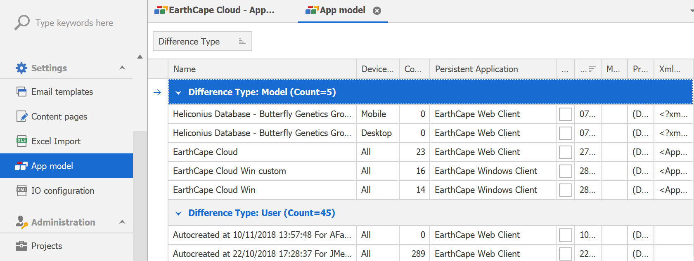
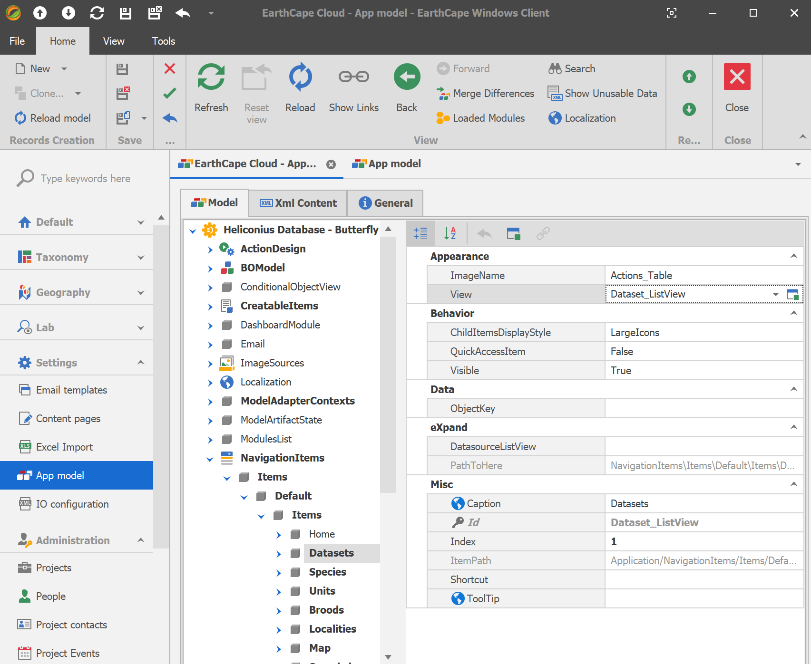

EarthCape Customization (via Application Model)
EarthCape uses a special XML-based content that stores structured information about the user interface in the database - Application Model. See how the Application Model information is collected, and how you can use it to customize the default UI.
WARNING: working with application model requires deep knowledge of EarthCape internal structure and certain changes may lead to inferior performance or malfunctioning.
EarthCape provides advanced administration tools to control much of the application structure and functionality.
Application Model Overview
When you run a Windows or Web client, the Application Model is used to create UI elements. For instance, when a table (list view) that displays a list of Locality objects is shown, information for each column's visibility, location, caption and other settings is taken from the Application Model. The Application Model provides details on object types, commands, editors and other elements that provide or influence application functionality.
The Application Model information is generally represented by a tree. Tree nodes normally have a set of properties that actually specify the Application Model data. By default, the Application Model is organized in the following way: the root node (Application) and several child nodes (ActionDesign, BOModel, CreatableItems, ImageSources, NavigationItems, ViewItems, Views, etc.).
Application Model Customization
Go to Settings/App model. (or for quick personal customizations - Tools/Edit Model)

Each record corresponds to a layer of changes that is applied in specified order when application is run. Difference Type column specifies if a model contains changes that are user specific (Difference Type=User) or application wide (Difference Type=Model). Both groups are subdivided to web and win client (Persistent Application column) and Device Category (All, Desktop, Mobile, Tablet).
For instance, to modify model settings for the all users that access the database via Windows client, you need to open a record that has Persistent Application=EarthCape Windows Client and Device Category=All. Respectively, if you need to apply customizations for the web interface for the small screen, you need to open a record that has Persistent Application=EarthCape Web Client and Device Category=Mobile.

Looking through the nodes (to the left) and their properties (to the right), you can see that most data has already been generated. For instance, the BOModel node provides information on all the object types that belong to EarthCape and other referenced modules.
The changes you make in the Model Editor are saved to the target Application Model
Note. You can customize the Application Model, either directly via the Model Editor or indirectly - by modifying the layout, changing the skin, etc. End-user customizations are stored in the user's model record in a database.
Application Model's Layered Structure
While customizing the Application Model in different places of your application, you should be aware of the order in which the Model is generated. Internally, the Application Model has a layered structure.
At its base, there is the zero layer. The generation of this layer is based on the code of the application's referenced modules. Higher, there are layers for each module of the application. Then, there is a layer for the application model (separately for Windows and Web clients). At the top is the layer with end-user customizations.
Main Concepts
- Business Objects (BOModel)
- Navigation (NavigationItems)
- Views